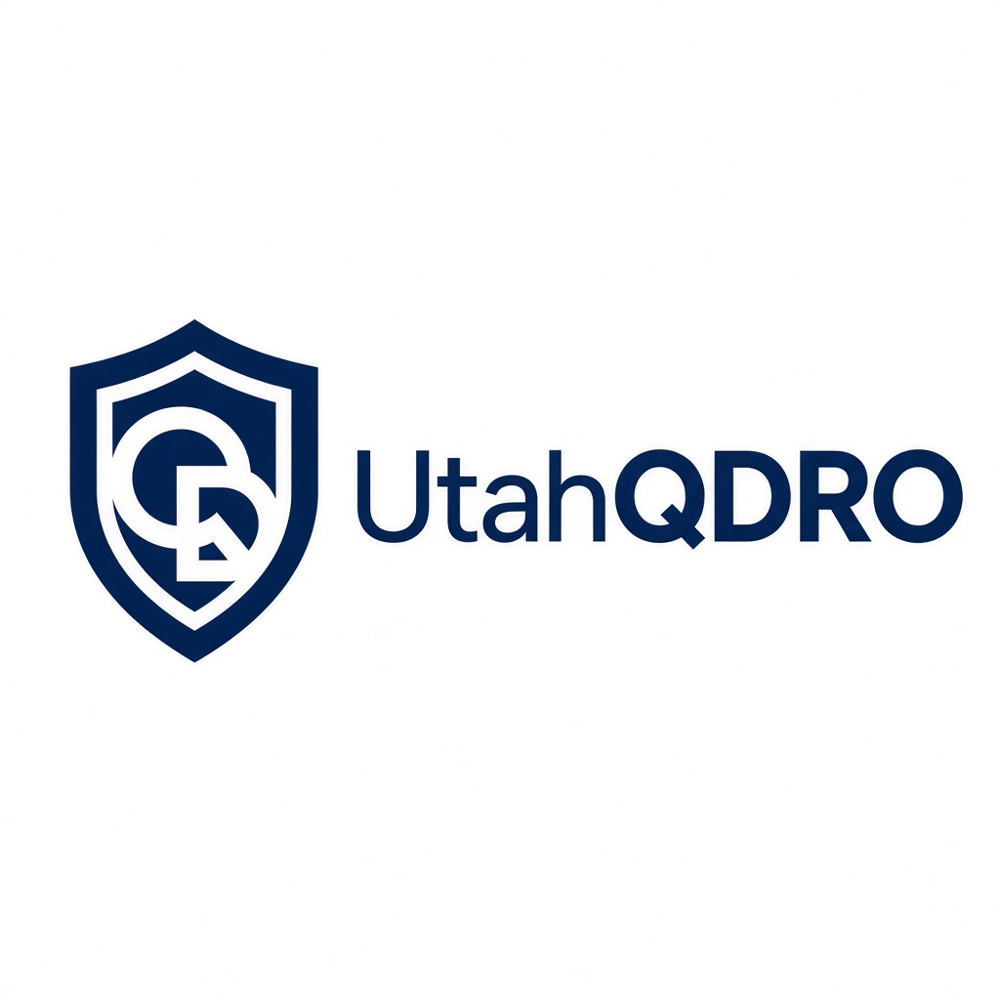
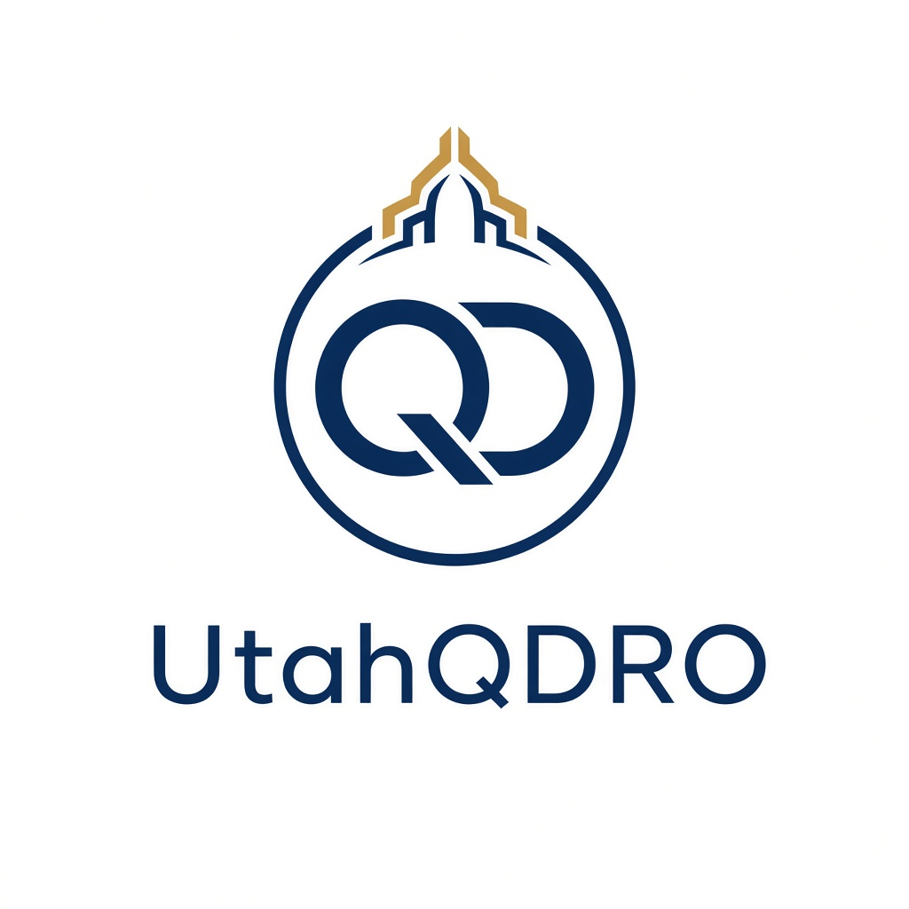
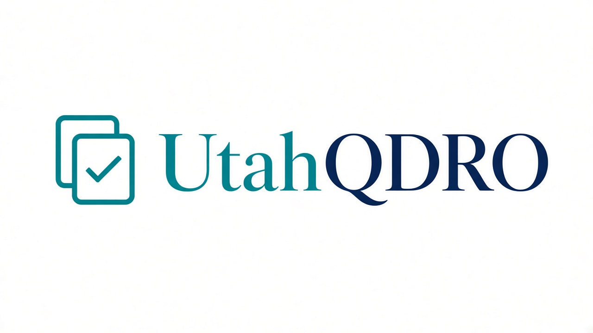
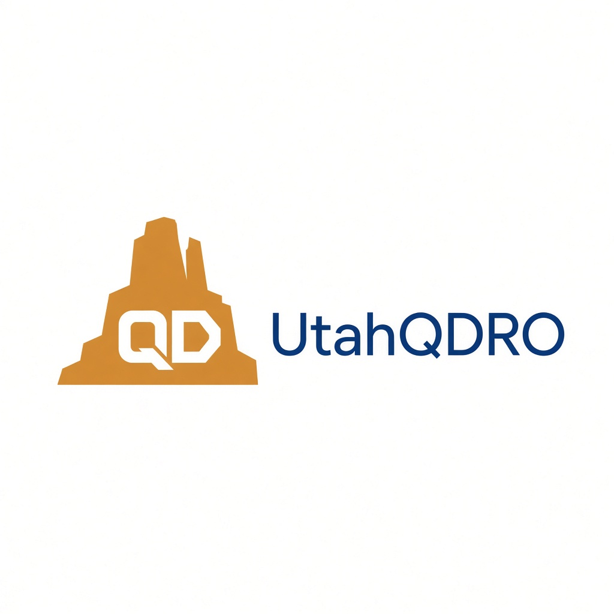
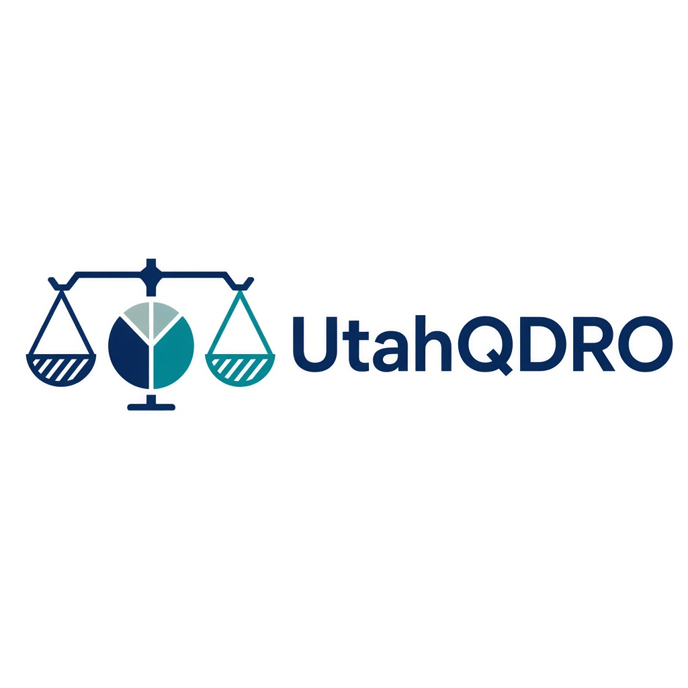
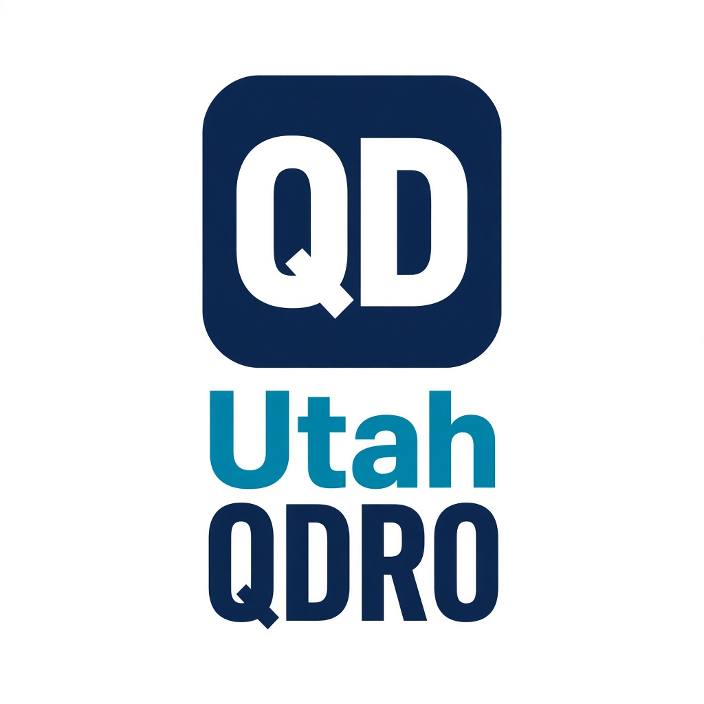
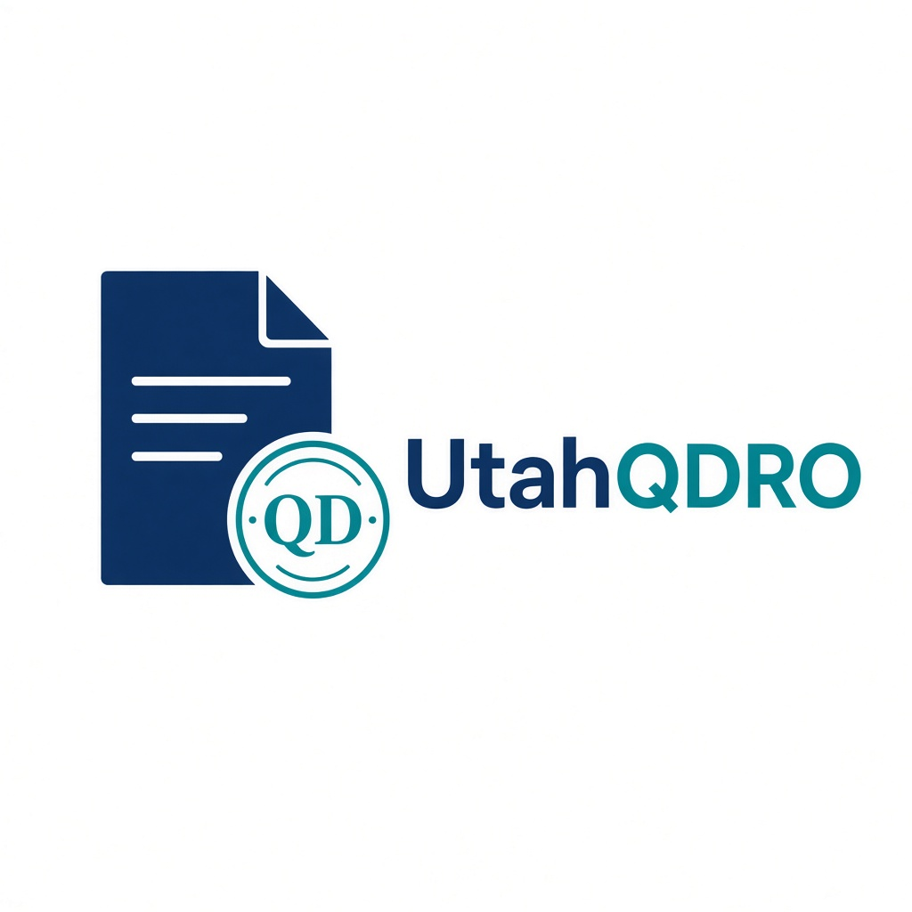
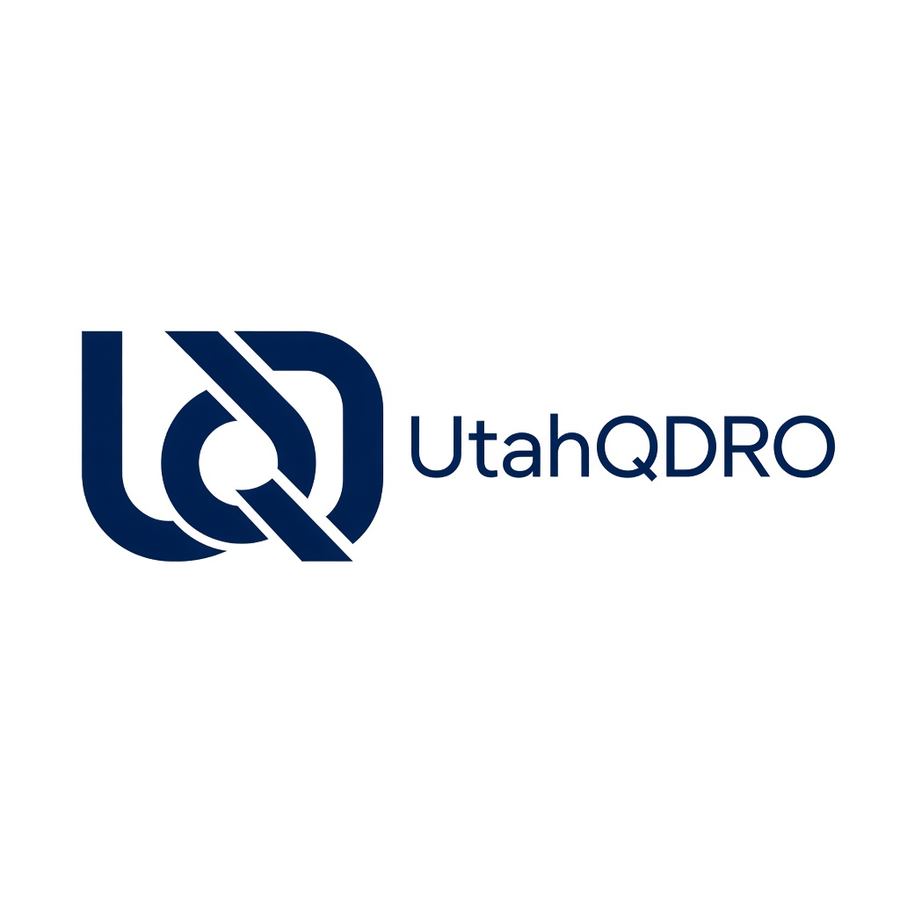
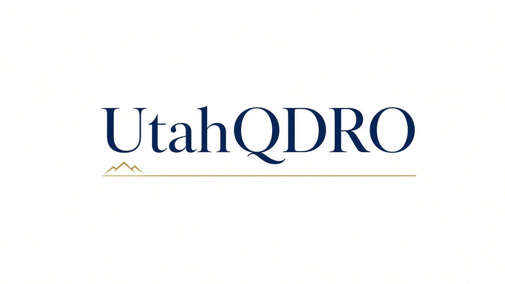
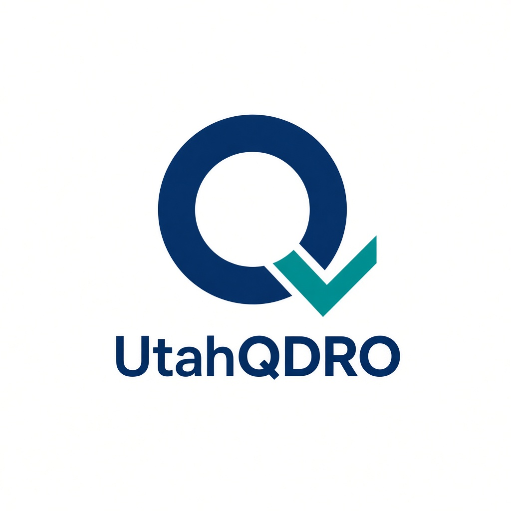

UtahQDRO logo concepts
Pick a number and tell me which one to refine for the site.

1. QD ShieldClassic legal monogram

2. Arch SealQD circle with Utah detail

3. Split WordmarkTeal Utah + navy QDRO

4. Red Rock QDDesert butte with QD cutout

5. Balance + DivisionScale fused with pie chart

6. Stacked BadgeQD tile over Utah / QDRO

7. Document StampOrder + QD seal

8. Interlocked U+QCustom monogram

9. Horizon LineWordmark with mountain underline

10. Modern Q CheckQ with checkmark tail